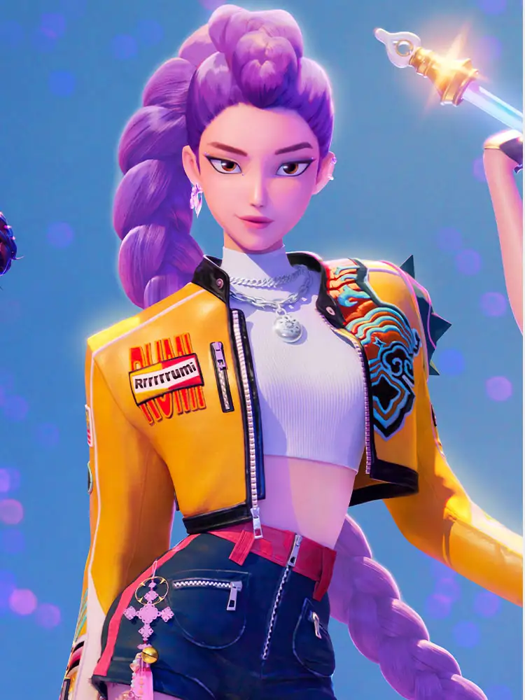
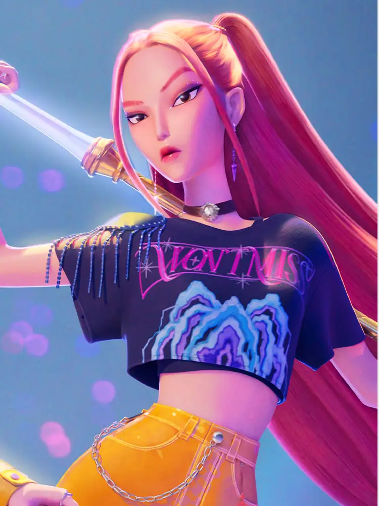
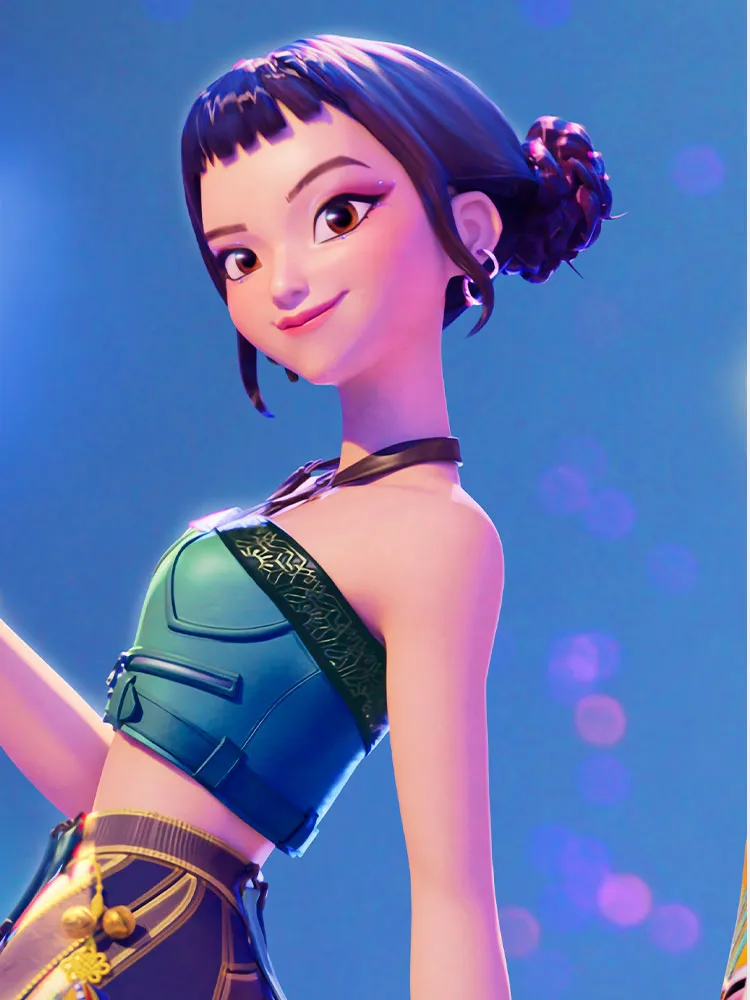
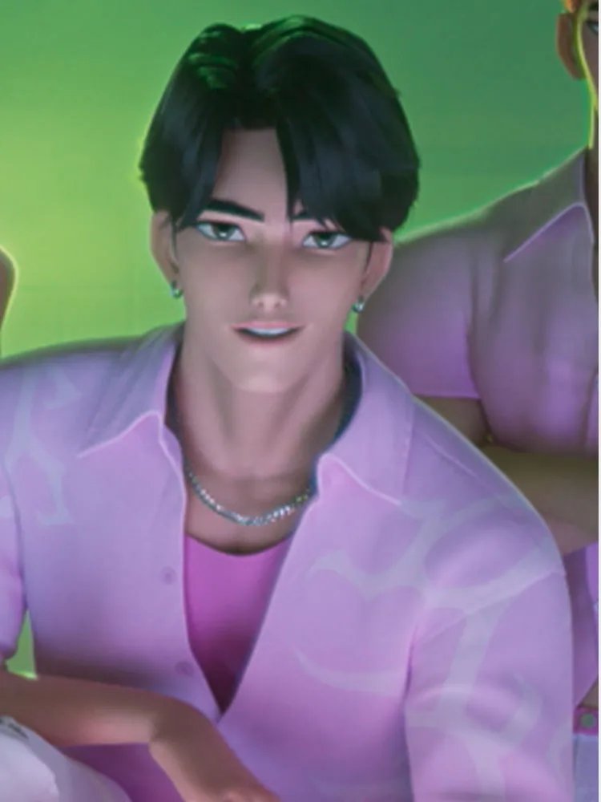
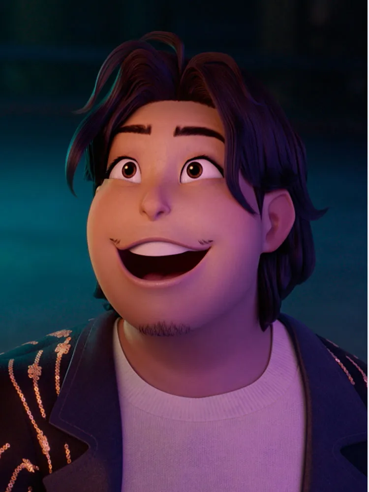
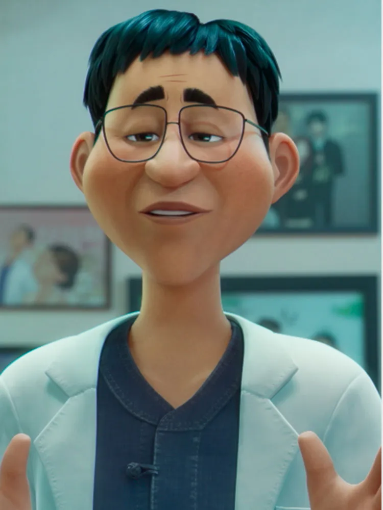

Kpop Demon Hunters 角色资料
Rumi
HUNTR/X 的主唱兼恶魔猎人，在团队里承担领导角色，既要面对舞台上的聚光灯，又要与邪恶势力战斗。

Mira
HUNTR/X 的另一名核心成员，个性强烈又有气场，是团队中的武斗担当。

Zoey
组合里的“忙内”，阳光爱笑的 Rapper，为团队注入轻松活力。

Jinu
Saja Boys 乐团的主唱，本是人类却被反派操控，是故事中的反差人物。

经理 (Bobby)
HUNTR/X 的经纪人兼代理人，负责打理日程并努力让团队不惹麻烦。

导师 Celine
HUNTR/X 的导师，曾是偶像明星，本身也曾是恶魔猎人，在主角失去亲生母亲后收养了她。
恶魔王 Gwi-ma
主要反派角色，是一个想征服世界的恶魔之王。
Healer Han
团队求助的医生，当 Rumi 嗓音出现问题时他给予治疗。
